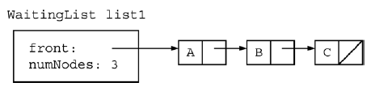
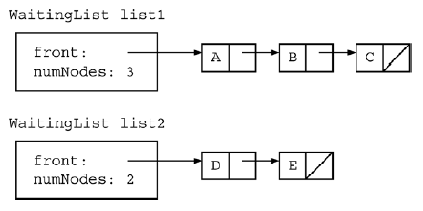
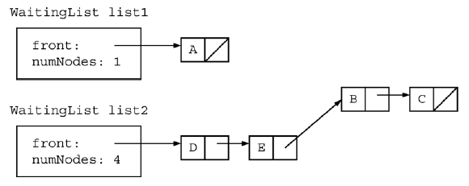

WaitingList |
||
|---|---|---|
|
Consider a class WaitingList that uses the ListNode
class to manipulate linked lists. The definition of public class WaitingList
{
private int numNodes;
private ListNode front;
// returns the number of nodes in this list
public int size()
{ return numNodes; }
// returns a reference to the node at index k,
// where the indexes are numbered 0 through size()-1
// precondition: 0 <= k < size()
private ListNode getKthNode(int k)
{ /* to be implemented in part (a) */ }
// removes the last num nodes from other and attaches them
// in the same order to the end of this WaitingList;
// updates the number of nodes in each list to reflect the move
// precondition: size() > 0;
// 0 < num <= other.size()
public void transferNodesFromEnd(WaitingList other, int num)
{ /* to be implemented in part (b) */ }
// There may be fields, constructors, and methods that are not shown.
}
a) Write the WaitingList method getKthNode.
This method should return a reference to the node at index k.
 Complete method getKthNode below. // returns a reference to the node at index k, // where the indexes are numbered 0 through size()-1 // precondition: 0 <= k < size() private ListNode getKthNode(int k)
b) Write the WaitingList method transferNodesFromEnd.
This method moves the last num nodes from the list For example, assume that two WaitingList objects have been defined and initialized as in the following diagram.  The result of the call list2.transferNodesFromEnd(list1, 2) would be as shown in the next diagram. 
Note that it is not necessary to copy nodes. Solutions that allocate any new ListNode objects will not receive full credit. In writing transferNodesFromEnd, you may assume
that getKthNode works as specified Complete method transferNodesFromEnd below. // removes the last num nodes from other and attaches them // in the same order to the end of this WaitingList; // updates the number of nodes in each list to reflect the move // precondition: size() > 0; // 0 < num <= other.size() public void transferNodesFromEnd(WaitingList other, int num) Sample Output
|
||